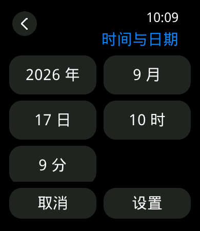
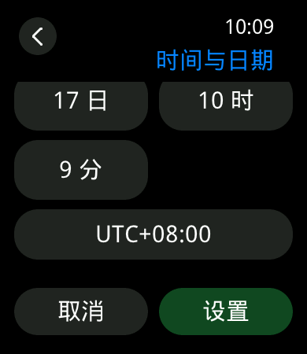
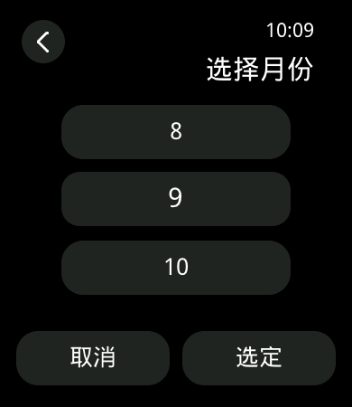

D10 界面完善与复核交接
复核范围
在 七页基本功能与首次校时整改上补齐字段拖动吸附、大字号重排、真实字体换行和诊断采样。以 IW-VISUAL-2.0 定稿为对照；本记录不等于架构审批，Issue #12 仍打开。
- 选择器只维护前值、候选值、后值。拖动超过半格后改变一个候选，松手按 190 ms ease-out 吸附；减少动态效果时直接到位。触摸与点击均可完成操作，不依赖旋钮。
- “选择”只合并字段草稿，整页“设置”才提交命令。取消、输入重置、Home、暂停和销毁停止动画，返回字段编辑前的滚动位置。
- 大字号校时页改为双列正文，时区可通过滚动到达；取消／设置保持固定。关于页按生产字体真实度量换行，错误文案进入正文，不覆盖页脚。
- 子页标题使用定稿蓝色。全局文字大小开关仍禁用；
iw_nav profile Q LARGE REDUCED仅用于工程验收，参数都是 0/1，不写入持久化设置。 - 采样使用固定 128 项数组，绘制回调只写记录；停止采集后才输出串口。不开启诊断时不查询额外的绘制空闲状态。
主机与同源渲染
全量 GUI 包装脚本通过：37 个页面构造失败点、47 个绘制失败点、15 个画线分配失败点，1000 轮七页生命周期、控制器、路由与故障恢复，既有字体／组件／触摸回归通过。新增真实 LVGL pointer 测试覆盖超过半格／不足半格拖动、取消、190 ms 插值、减弱动效与滚动恢复；127 个宽拉丁字形验证真实换行和相邻行间距。采样测试覆盖同批多次绘制去重、容量上限、时钟回绕、延迟空闲及关闭状态。
核心脚本 46 项 Python 检查通过，其中 FontTools 环境缺失一项跳过；GUI 脚本在 FontTools 环境运行 38 项并覆盖该检查。两组有重叠，不累加。120 张同源帧清单（已按 cd8c6e7 重新生成）覆盖七页、Q0/Q1、两种字号、减弱动效及选择器／正文底部；它们是主机软件渲染，不是实屏照片。



目标构建
| 工具链 | main 大小 | 槽占用 | 状态 |
|---|---|---|---|
| GCC | 1,913,076 B | 30.406% | 构建、身份、预算及 COM255 DryRun 通过；main SHA-256 b65ec2e5423dac79c99a7eec3ebabe5bbcd78d5862ef88761c4e5e924933acba。 |
| Keil | 1,837,792 B | 29.211% | 构建、身份、预算及 COM255 DryRun 通过；main SHA-256 f9644930a475c6cc1204336e17da677c6194f23e514ccc29353e5ea14427a3c9。 |
受控 SDK 补丁仍为 31 文件，SHA-256 52b18a9f4f107962121c2f692c434141c090979658d894da8728eba08381b506。TTF 65,752 B、位图字体 51,335 B、链接图片 866,577 B 均未增加。采样静态数组占 2,560 B，另有固定状态；不计为动态堆增长。
实机复验与原始证据
前一轮 GCC 三件套已通过 COM9 写入并校验；本轮源码 cd8c6e7 已重新完成 GCC/Keil 构建、身份和预算检查，待开发板连接后再用 COM9 刷入并做相关页面抽查。没有访问 J-Link。当前 GCC main SHA-256：b65ec2e5423dac79c99a7eec3ebabe5bbcd78d5862ef88761c4e5e924933acba；Keil：f9644930a475c6cc1204336e17da677c6194f23e514ccc29353e5ea14427a3c9。
| 项 | 本轮结果 |
|---|---|
| 正常动效选择器 | 初次反馈“半格直接到下一月”；随后确认“轻移会回弹，接近半格才改变”。本轮以相邻候选中心距 75 px 的中点为阈值。保留原反馈，记作阈值手感澄清，未据此修改代码或声称修复额外故障。 |
| Q0／大字号／减弱动效／80% | 人工确认双列字段、滚动时区、固定页脚、松手直接到位、整页取消后重新进入未保存，以及文字和操作正常。 |
| Q1／大字号／正常动效／20% | 人工确认校时提交、表盘更新时间、关于页长构建信息及约 15 秒连续滚动、按键返回正常。时钟从 valid=0 变为 valid=1、offset=480、revision=2、source=MANUAL；含两条诊断亮度命令的 submitted/completed/ack 为 3/3/3，活动队列与账本均为 0。 |
| 十轮自动进退 | 恢复 Q1／标准字号后，设置→显示→亮度→返回→校时→关于→返回列表，共十轮、十一份同状态样本。主堆首样本 74,336 B，预热后 74,696～74,732 B；字形池首样本 31,832 B，预热后 38,680～38,936 B；字体引用全部为 8，未观察到持续增长。后台 App／页面仍有所有权，不能与单应用启动样本直接比较。 |
| 故障清理 | owner_cleanup_only 释放 8 个引用至 0，字形池回到 72 B；人工确认 UI unavailable、KEY1 返回及再次进入表盘、设置、校时正常，时间仍有效。这不是实机真实堆耗尽注入。 |
| 输入、显示与栈 | 最终触摸 overflow=0、discarded=0、high=6；显示 recovery=0、fault_pending=0。本窗口未见新显示超时，不推断 #10 已修复。实体输入队列 14 个样本，P95/max=0 ms，仅代表本次少量按键。tpread 栈 2048 B／峰值 27%，app_watch 16384 B／31%，lcd_task 2048 B／43%。 |
最终串口状态为 iwface/root、两个 App；主堆 73,924 B、字形池 27,684 B、引用 7。这是表盘前台、后台页面存在的样本，不写成列表单页或精确回到启动值。全窗口主堆最高使用 116,468 B，字形池峰值 46,632 B；相对于记录基线的 peak_delta 分别为 71,452／46,560 B。
绘制批次基线
| 采样窗 | 提交耗时 P50／P95／最大 | 批次开始间隔 P50／P95／最大 |
|---|---|---|
| 选择器与停留，128 批次 | 23／37／50 ms | 33／1015／1015 ms，包含每秒刷新和用户停留。 |
| 关于页大字号滚动，128 批次 | 49／54／60 ms | 50／122／182 ms，继续关联 #8。 |
第一窗记录一份 ONRESUME 到首次 DRAW_MAIN 的 5 ms 样本，不是从点击到面板显示的完整首帧时间。关于页在 ONRESUME 之后重新开始采样，故没有首次绘制样本。连续绘制期间多个未决批次等到同一个全局空闲观察点，第二窗 idle_observation 最大 4864 ms；它不是单帧耗时，不用于帧率结论。新增探针开／关对照见下方 D10-D 表格，停止采样后的集中串口输出仍不计入测量窗。
上一轮封存目录 logs/board-validation-20260918-d10-refinement 仅本地可用，包含 52 项校验和、两套构建、两次完整烧录输出、主机日志、人工确认、循环脚本及绘制原始采样。原始串口 223,510 B，SHA-256 ded2ffb1566184aab2e5b1c0b6571a37192a01fdf8c79cb01ef67d103fcfbd4e；时间线 SHA-256 570153528d7c4a96e0d240d7d95531088218bc408d704535d1f3dd868e473c60。接收偏移连续性通过，但不证明设备复位／USB 期间绝无丢字节；flash_verified 的记录时刻晚于实际写入完成，不把其 raw_offset 当作启动分界。
差异与待裁定项
- V-DIFF-08：跨页沿用稳定无快照切换。SDK 调度内部固定 SWITCH_ANIM_PERIOD=300，公开配置没有时长和定稿空间关系的完整表达能力；本轮按定稿降级条款登记，未宣称实现 250/290 ms 目标，也未扩大 SDK 补丁。是否接受该差异由架构复核确认。
- V08 测量边界：
iw_nav probe start/stop记录 LVGL handler 中发生产品页绘制的批次、ONRESUME 到首次 DRAW_MAIN、提交时刻和随后 GPU/LCD 空闲观察。一次批次可含多块绘制；空闲轮询是完成时间上界，批次间隔包含用户停顿，不能换算为面板 FPS。精确扫描完成时刻及诊断开销的实测仍需独立仪器或专门时序验证。 - #8 保留历史最大 215 ms、触摸溢出与长文性能记录，不宣称全面流畅度达标。
- #10 保留半黑半白及上轮软件复位后 LCD draw timeout 的不同证据。根因未定位，不因界面操作通过而关闭。
- 真实内存耗尽、实体编码器、持久化、联网及完整 Apple Watch 功能不属于本次验收；清理命令仅证明页面资源回收与恢复路径。
建议复核顺序：候选值与命令边界 → GUI 单线程及动画取消 → 字体分配失败与页面回收 → 双工具链身份 → 原始实机与测量边界。源码、构建和实物三个层次分别签字，不互相替代。
D10-D 增量验收：外观、七页往返与 V08
本轮代码基线为 cd8c6e7，在已批准的 D10 页面和服务上只补齐架构复核要求：应用列表按下态改为整行反馈；“文字大小”禁用项显示“未接入”；主操作按钮统一深绿色填充和 30 px 圆角；关于页增加 1 px 分隔线；绘制探针增加诊断开／关的计时计数。未扩大 SDK 补丁范围。
| 验收项 | 板上结果 |
|---|---|
| 完整七页往返 | COM10 原始日志中完成 3 轮：应用列表根 → KEY1 表盘 → KEY1 应用列表根；每轮依次进入设置（0100）、显示（0101）、亮度详情（0102）、返回、时间（0103）、返回、关于（0105）、返回设置、返回列表。最终均回到 iwlist/root，未见导航失败或页面卡住。 |
| 前后台内存对照 | 冷启动列表根为主堆 43,692 B、字形池 1,432 B、引用 2；表盘前台／列表后台稳定样本为主堆 63,460 B、字形池 11,264 B、引用 7；列表前台／表盘后台稳定样本为主堆约 80,532 B、字形池约 42,484 B、引用 7。三轮后未观察到逐轮增长；峰值记录为主堆 119,432 B、字形池 47,152 B，不能把后台保留对象误判为冷启动基线。 |
| V08 首绘与完整帧 | iw_nav probe start/stop 共记录 17 个批次。首绘样本的 ONRESUME→首次 DRAW_MAIN 为 5、7、8 ms；提交到 LCD/GPU 空闲观察约 30～50 ms。最长批次间隔 1,490 ms 包含页面停留／命令等待，不作为单帧耗时，也不宣称 30 FPS。 |
| 诊断开销对照 | 同一串口窗口报告：探针开启 count=449,total=359863 us,max=32349 us；关闭 count=182,total=35489 us,max=15686 us。计时起点为 GUI frame handler 进入探针前，终点为探针 begin/end 返回；该数据只描述探针与空闲观察开销，不代表面板刷新率。 |
| 实机与证据 | logs/board-validation-20260918-d10-architect-fixes（仅本地）保存完整烧录、命令时间线和原始串口。serial-raw.bin：79,878 B，SHA-256 b385d4c54384b9c9a79d3e270847f3cfdbcba43e5a5bc4965c6ecf5047b7a050；使用 COM9/COM10，未访问 J-Link。 |
主机全量脚本为 38 项 Python 测试，字体、组件、路由、输入和产品边界测试均通过；GCC/Keil 均已重新构建、身份校验和 DryRun 通过。#8 的长文延迟／触摸溢出、#10 的显示异常、#12 的 D10 总体验收仍保持打开，以上证据提交架构师做增量复核。